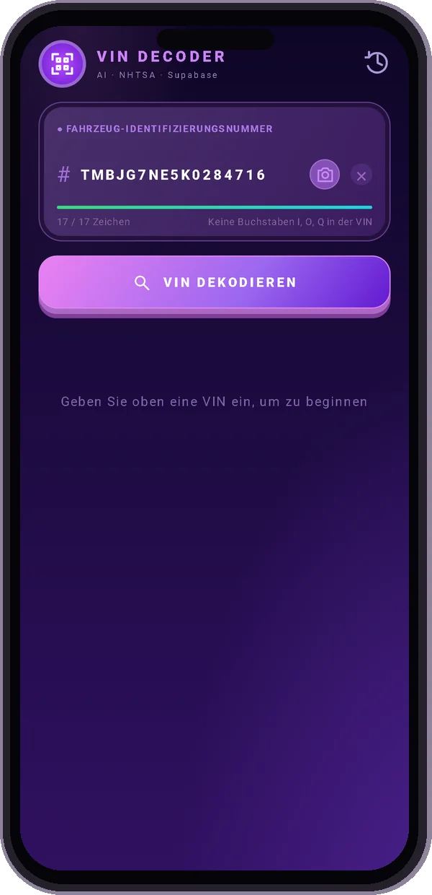
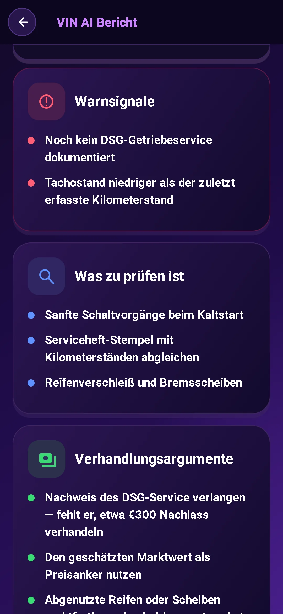
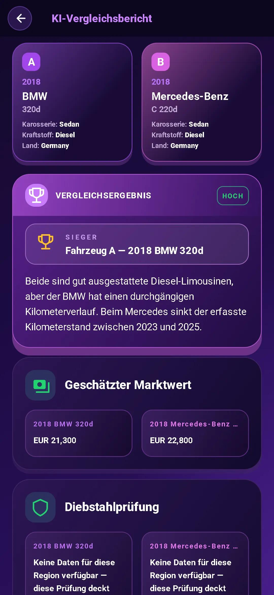

VIN scannen
Richten Sie Ihre Kamera auf den VIN oder geben Sie ihn ein. Beginnen Sie mit einem kostenlosen VIN-Check der grundlegenden Spezifikationen des Fahrzeugs.
Jeder Gebrauchtwagen hat eine Geschichte. Beginnen Sie mit seiner VIN.
Holen Sie sich die Spezifikationen, erkennen Sie die Warnsignale und gehen Sie vorbereitet in das Gespräch.
Berichtsvorschau gesperrt. Datenverfügbarkeit hängt vom Fahrzeug und der Quelle ab.
Bei Google Play herunterladenVIN kostenlos entschlüsseln. Vollständiger KI-Bericht für $3.99. Ohne Abo.

Gehen Sie über eine VIN-Suche hinaus. Verwandeln Sie die Details in Fragen, die es wert sind, gestellt zu werden.
Richten Sie Ihre Kamera auf den VIN oder geben Sie ihn ein. Beginnen Sie mit einem kostenlosen VIN-Check der grundlegenden Spezifikationen des Fahrzeugs.
Prüfen Sie Motor, Ausstattung, Antrieb und weitere Daten. Dazu kommen NHTSA-Rückrufe, Beschwerden von Fahrzeughaltern und Crashtest-Bewertungen sowie EPA-Verbrauchsdaten.
Siehe Marktwert- und Kilometerinformationen. Stellen Sie den geforderten Preis in einen Zusammenhang, bevor Sie mit den Verhandlungen beginnen.
Erhalte eine KI-Einschätzung: kaufen, vorsichtig sein oder Abstand nehmen – mit Prüfwert, möglichen Schwachstellen und Hinweisen für die Besichtigung.
Stellen Sie dem Verkäufer bessere Fragen. Nutzen Sie Inspektionshinweise und Verhandlungstipps, um Ihren nächsten Schritt zu planen.
Chatten Sie mit dem KI-Assistenten, auch über Fotos. Erhalten Sie Hilfe beim Verständnis der Details in einer der 10 unterstützten Sprachen.


Vergleichen Sie zwei Autos direkt miteinander. Fahrzeugdaten und KI-Analysen zeigen die Vor- und Nachteile, bevor Sie zur Besichtigung fahren.
Suchen Sie den 17-stelligen VIN auf der Windschutzscheibe, im Türrahmen oder in den Fahrzeugpapieren.
Sehen Sie sich die entschlüsselten Spezifikationen an und erhalten Sie einen KI-Bericht mit Risiken, Fragen und praktischen Ratschlägen.
Stelle die richtigen Fragen. Prüfe die Unterlagen. Lass das Auto vor dem Kauf unabhängig untersuchen.
Einmaliger Kauf. Kein Abonnement erforderlich.
Brauchen Sie nur die Grundlagen? Die VIN-Dekodierung ist in der App kostenlos.
Informieren Sie sich, was Sie bekommen, bevor Sie Ihr nächstes Auto überprüfen.
Eine Fahrzeugidentifikationsnummer (VIN) ist eine eindeutige 17-stellige Kennung, die in modernen Fahrzeugen verwendet wird. Ein VIN-Decoder wandelt diese Kennung in Fahrzeugspezifikationen wie Modell, Motor und Antriebsstrang um.
Sehen Sie sich die Unterseite der Windschutzscheibe auf der Fahrerseite, den Türpfosten des Fahrers oder die Fahrzeugschein- und Versicherungsunterlagen an. Scannen Sie es in der App mit Ihrer Kamera oder geben Sie es ein.
Ein vollständiger KI-Bericht enthält Fahrzeugdaten, die Einschätzung „kaufen / vorsichtig sein / Abstand nehmen“, einen Prüfwert, Warnsignale, Prüfpunkte, Fragen an den Verkäufer und Verhandlungstipps. Die App bietet auch Marktwert- und Kilometerstandsinformationen, NHTSA-Rückrufe, Beschwerden von Fahrzeughaltern und Crashtest-Bewertungen sowie EPA-Verbrauchsdaten. Umfang und Verfügbarkeit hängen vom Fahrzeug und der Quelle ab.
Die grundlegende VIN-Dekodierung ist in der App kostenlos. Ein vollständiger KI-Bericht kostet als einmaliger Kauf $3.99, ein Abonnement ist nicht erforderlich.
Möchten Sie das für IHR Auto? Geben Sie die VIN Ihres Autos in der App ein.
Bei Google Play herunterladenKostenlose Basisdekodierung · Vollständiger $3.99-KI-Bericht · Kein Abonnement erforderlich